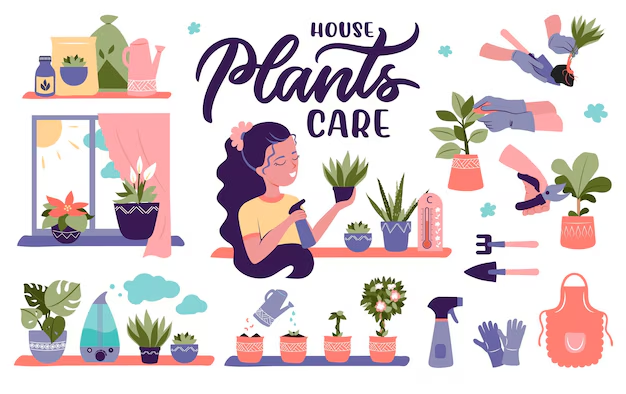
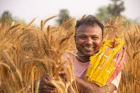

Forum
Share questions, quick wins, and crop-specific advice in one place.
The old community page was mostly a placeholder. This version turns it into a more readable showcase for the three content areas already in the project.
Share questions, quick wins, and crop-specific advice in one place.

Short, practical tips that help users act on what they learn immediately.

Longer reads for users who want context, techniques, and growing background.

A second visual lane for article-style content and small updates.
If you keep expanding the project later, this page is a good spot for a feed, pinned questions, or topic filters. For now it acts as a polished preview of the content ecosystem.
Everything is grouped by topic rather than stacked like a simple gallery.
Titles and descriptions make each image asset feel intentional.
This structure can later support comments, posts, or topic filters.
Keep the simple footer, but make it feel part of the design instead of an afterthought.